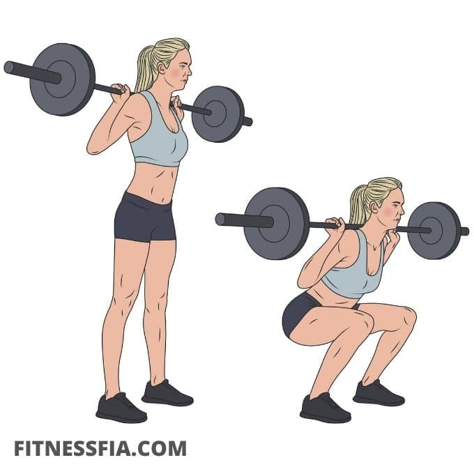
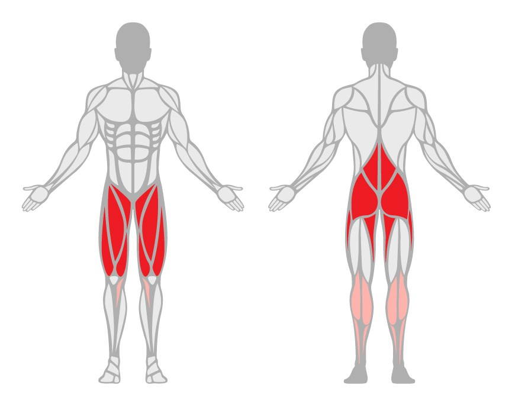
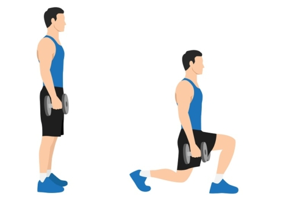
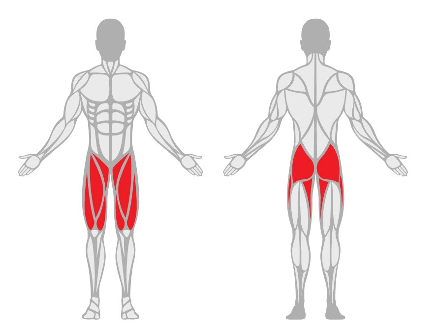
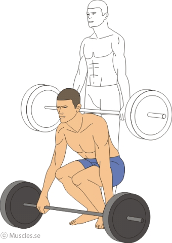
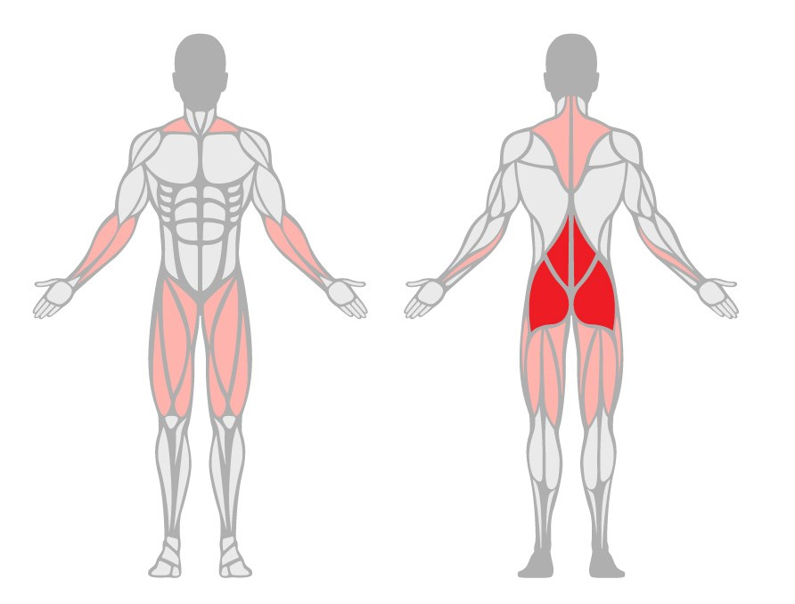
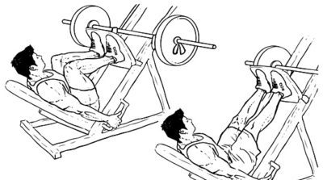
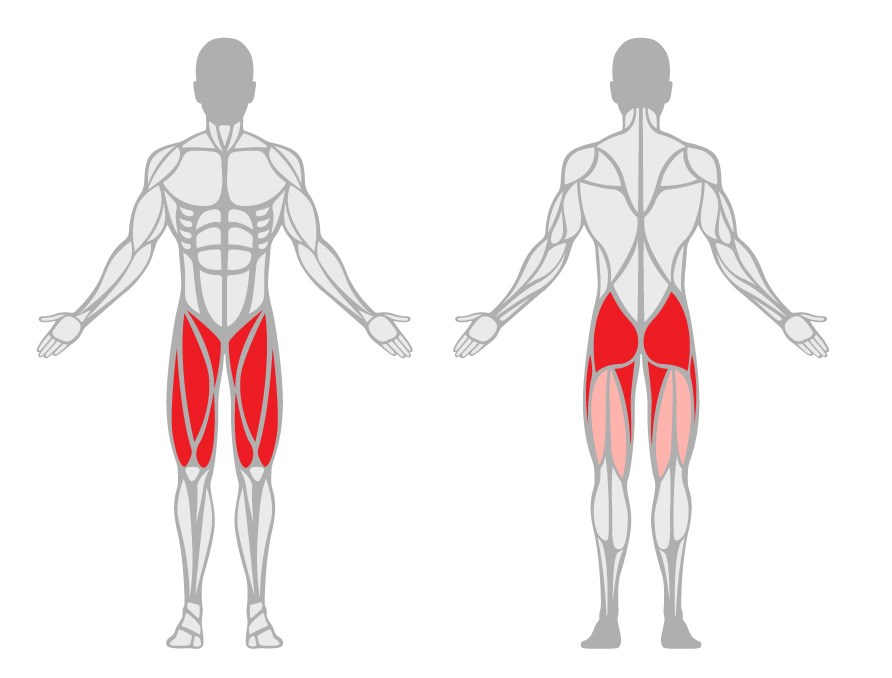
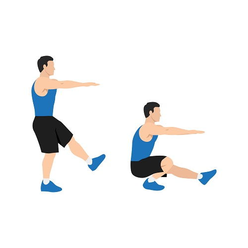

Övningar
1. Knäböj (Squat)
* Primära muskelgrupper: Quadriceps, gluteus maximus (rumpmuskeln), hamstrings.
* Utförande: Stå med fötterna i axelbreddes avstånd,
sänk kroppen genom att böja knäna och sänka höften som om du skulle sitta på en stol.
Se till att hålla ryggen rak och knäna över tårna. Återvänd till startpositionen genom att
pressa genom hälen när du reser dig upp.


2. Utfall (Lunges)
* Primära muskelgrupper: Quadriceps, gluteus maximus, hamstrings.
* Utförande: Ta ett stort steg framåt med ena foten och sänk kroppen genom
att böja båda knäna tills det bakre knäet är nära marken. Pressa genom främre
hälen för att återgå till startpositionen och byt sedan ben.


Marklyft (Deadlift)
* Primära muskelgrupper: Hamstrings, gluteus maximus, nedre ryggmuskulaturen (ländryggen).
* Utförande: Stå med fötterna i axelbreddes
avstånd och böj dig framåt med rak rygg för att greppa
skivstången eller hantlarna. Lyft sedan vikten genom att sträcka
på benen och lyfta höften tills du står upprätt. Sänk sedan vikten kontrollerat
tillbaka till marken.


4. Benpress (Leg Press)
* Primära muskelgrupper: Quadriceps, gluteus maximus, hamstrings.
* Utförande: Sitt på maskinen och placera fötterna på plattformen med axelbreddes avstånd.
Tryck sedan plattformen framåt genom att sträcka på benen tills de nästan är helt raka. Sänk
plattformen kontrollerat tillbaka till startpositionen.


5. Benböj på ett ben (Single Leg Squat)
* Primära muskelgrupper: Quadriceps, gluteus maximus, hamstrings.
* Utförande: Stå på ena benet och sänk kroppen nedåt genom att böja knät och höften,
som vid en vanlig knäböj. Håll det andra benet framför dig för balans. Res dig upp till
startpositionen genom att pressa genom hälen på det aktiva benet.

Dessa övningar är alla effektiva för att träna olika muskelgrupper i benen och kan anpassas med vikt och repetitionsantal baserat på individens träningsmål och nivå. Kom ihåg att använda korrekt form och teknik för att minimera risken för skador och maximera resultaten.
Fakta
Benmusklerna är en viktig del av kroppens muskulatur och spelar en central roll i vårt dagliga liv,
rån att gå och springa till att utföra olika fysiska aktiviteter. Här är några fakta om benmusklerna
1. Stora och komplexa muskelgrupper Benmusklerna består av flera stora och komplexa muskelgrupper,
inklusive quadriceps (framsida lår), hamstrings (baksida lår), gluteus maximus (rumpmuskeln),
gastrocnemius (vadmuskeln) och många fler mindre muskler.
2. Ansvar för rörelse och stabilitet Benmusklerna är inte bara ansvariga för att röra benen utan spelar också
en viktig roll i att stabilisera kroppen under rörelse. De ger styrka och stöd som behövs för att utföra
olika aktiviteter med precision och balans.
3. Styrketräning och funktionell rörelse Träning av benmusklerna är en viktig del av ett balanserat
träningsprogram. Genom styrketräning av benmusklerna kan man förbättra muskelstyrka, uthållighet och
flexibilitet, vilket inte bara förbättrar prestandan i vardagen utan också minskar risken för skador.
4. Kärnan i kroppens rörelsessystem Benmusklerna är kärnan i kroppens rörelsessystem och arbetar tillsammans
med andra muskelgrupper och leder för att skapa effektiva och smidiga rörelser. Styrka och flexibilitet i
benmusklerna är avgörande för att upprätthålla en god rörlighet och hälsa i hela kroppen.
5. Anpassningsförmåga Benmusklerna har en imponerande förmåga att anpassa sig och växa i styrka och storlek
med regelbunden träning och belastning. Genom att inkludera olika typer av övningar och variera intensiteten
kan man stimulera benmusklerna på olika sätt och uppnå olika träningsmål, från muskeltillväxt till uthållighet
och explosivitet.